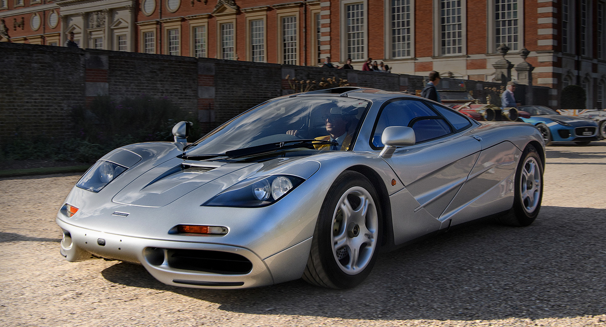

Nascida da engenhosa mente de Gordon Murray, o McLaren F1 pode ser descrito com apenas 8 letras: perfeito, e isso não é um exagero. Com um incrível e confiável motor V12, posição central de direção, peso baixíssimo e itens de conforto, o F1 pode ser considerado como um carro ideal. Em sua construção, a equipe de engenheiros não economizou esforços em nenhuma parte, afinal, Murray era super exigente e não aceitaria nada abaixo da perfeição, tanto é que muitas tecnologias foram desenvolvidas especificamente para tornar o F1 cada vez mais bem ajustado. Apenas 64 unidades foram produzidas para as ruas, onde o carro entregava um desempenho surpreendente até para os dias de hoje. Infelizmente me falta espaço para descrever a perfeição que esse carro é, então, aos interessados em conhecer melhor essa perfeição, recomendo este documentário.